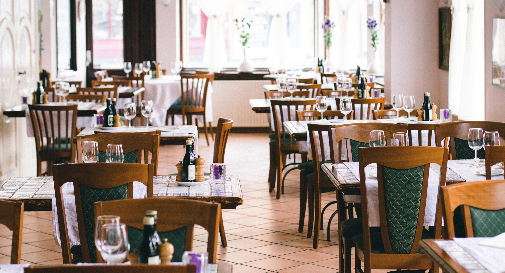
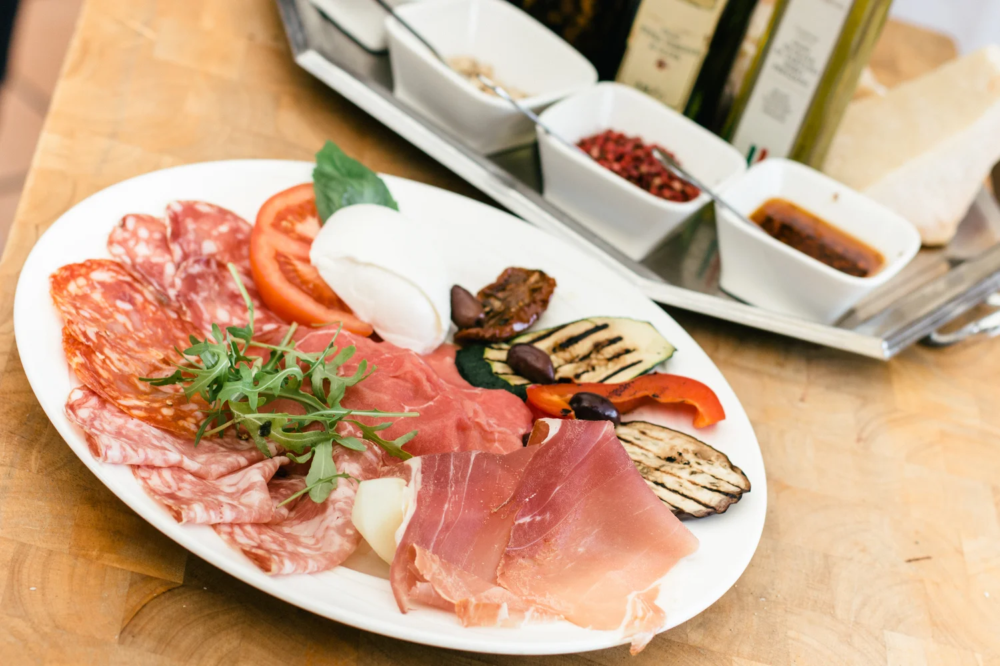

Sinds 1966 aan het Houtplein
RISTORANTENapoli
Traditioneel Italiaans restaurant in hartje Haarlem. Verse pasta, pizza uit onze pizzeria, en klassiekers die wij bij u aan tafel bereiden en flamberen.
- Opendagelijks vanaf 15:30
- Bel(023) 532 4419


Over ons
Een begrip in Haarlem
Ristorante Napoli is sinds 1966 een begrip in Haarlem op het gebied van Italiaanse specialiteiten. Gelegen naast de Grote Houtbrug, op de hoek van het Houtplein en de Gasthuissingel, is Napoli niet meer weg te denken uit hartje Haarlem.
Gerardo Cannavacciuolo nam de inspiratie van de traditionele Italiaanse keuken mee naar Nederland, waar hij in 1966 als een van de eerste Italiaanse restaurateurs de authentieke Italiaanse gerechten introduceerde. Onze passie voor de Italiaanse keuken en de beste ingrediënten maakt Napoli een van de weinige restaurants in Nederland die diverse voor-, hoofd- en nagerechten bij u aan tafel bereiden.
Of het nu gaat om een romantisch diner, een gezellig familie-etentje of een authentieke pizza uit onze pizzeria: u bent bij ons aan het juiste adres. Afhalen kan ook.
- Gewonnen prijzen
- Il cuoco d'oro, Il buona cucina en Trofee Italia (voor de beste pasta)
- Tripadvisor
- #83 van 602 eetgelegenheden in Haarlem
- Allergieën
- Certificaat Allergenenbeheer, goedgekeurd door NVWA & KHN
Specialiteit van het huis
Aan uw tafel bereid
Gefileerd, getrancheerd, geklopt of geflambeerd: deze gerechten maken wij bij u aan tafel klaar, zoals bij Napoli al sinds Gerardo gebruikelijk is.
Carpaccio di Manzo
15,50Ossenhaas carpaccio, aan tafel bereid met zwarte peper, zeezout, kappertjes, olio extra vergine en Parmigiano Reggiano.
Filetto di Manzo di Gerardo
58,00 p.p.Ossenhaas tournedos naar speciaal recept van Gerardo, romige truffelsaus met funghi porcini. Voor minimaal twee personen.
Tagliata di Manzo
35,00Tournedos aan tafel getrancheerd, met rucola, Parmigiano Reggiano en een saus van boter en Italiaanse brandy.
Sogliola al Burro
40,00Noordzeetong in roomboter gebakken en aan tafel gefileerd.
Sgroppino al Limone
10,50Citroenroomijs met prosecco, limoncello en vodka, aan tafel geklopt.
Crêpes Suzettes Italiano
22,50 p.p.Pannenkoekje en vers fruit in gekarameliseerde suiker, sambuca en amaretto, aan tafel geflambeerd. Voor minimaal twee personen.
Heeft u een allergie of dieetwens? Vraag uw bediening om de volledige allergenenlijst. Glutenvrije pasta (spaghetti of penne) is op verzoek beschikbaar.
Groepen, partijen & catering
Samen aan tafel
20 tot 150
personen, in onze aparte (boven-)zalen
Dankzij diverse aparte zalen bent u ook met groepen en partijen voor lunch, borrel of diner bij ons aan het juiste adres. Wij denken mee over het menu en de dranken en maken een voorstel dat bij uw gezelschap past.
- Recepties
- Bruiloften
- Product- en bedrijfspresentaties
- Vergaderingen
- Familiefeesten
- Workshops
- Buffetten
Voorzieningen
Diverse zalen hebben een eigen (invaliden-)toilet, garderobe en bar. Beamer, scherm en microfoon zijn beschikbaar.
Catering
Ook voor catering van feesten en partijen kunt u bij ons terecht. Vraag naar de mogelijkheden.
Afhalen
Liever thuis eten? Bij Ristorante Napoli kunt u ook afhalen. Neem contact op voor de mogelijkheden.
Voorstel op maat
Neem contact op voor de mogelijkheden; wij houden rekening met uw wensen rond menu en dranken.
Prenotazioni
Reserveren
Dove siamo
Houtplein, Haarlem
Houtplein 12012 DD Haarlem
Naast de Grote Houtbrug, op de hoek van het Houtplein en de Gasthuissingel. Parkeergarage Houtplein ligt op 50 meter.
- Parkeergarage Houtplein50 m
- Carlton Square hotel100 m
- Frederikspark200 m
- Frans Hals Museum300 m
- Stadsschouwburg Haarlem500 m